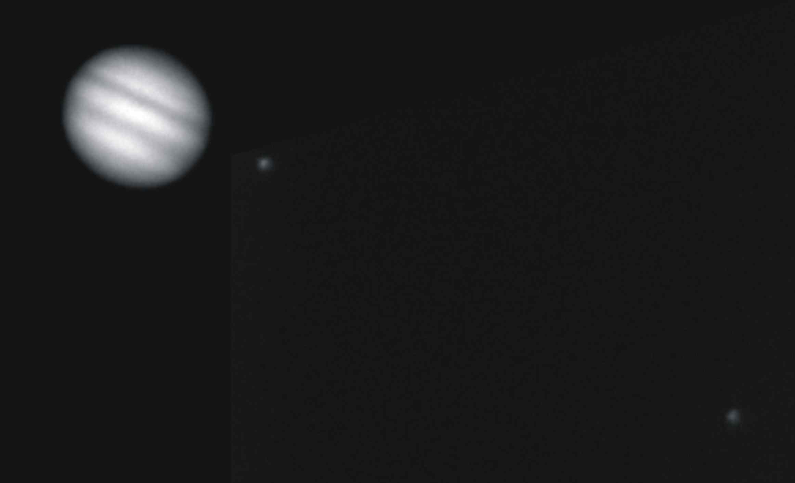

astronovel.webege.com
|
|
|
|
astronovel.webege.com |
|
|
|
||||||||||||||||||||||||||||||||||||||||||||||||||||||||||||||||||||||||||||||||||||||||||||||||||||||||||||||||||||||||||||||||||||||||||||||||||||||||||||||||||||||||||||||||||||||||||||||||||||||||||||||||||||||||||||||||||||||||||||||||||||||||||||||||||||||||||||||||||||||||||||||||||||||||||||||||||||||||||||||||||||||||||||||||||||||||||||||||||||||||||||||||||||||||||||||||||||||||||||||||||||||||||||||||||||||||||||||||||||||||||||||||||||||||||||||||||||||||||||||||||||||||||||||||||||||||||||||||||||||||||||||||||||||||||||||||||||||||||||||||||||||||||||||||||||||||||||||||||||||||||||||||||||||||||||||||||||||||||||||||||||||||||||||||||||||||||||||||||||||||||||||||||||||||||||||||||||||||||||||||||||||||||||||||||||||||||||||||||||||||||||||||||||||||

|
ASTRONOMÍA
Astronomía (en griego: αστρονομία = άστρον + νόμος = "Ley de las estrellas") es la ciencia que se ocupa del estudio de los cuerpos celestes
La astronomía ha estado ligada al ser humano desde la antigüedad y personajes como Aristóteles, Tolomeo, Copérnico,
Brahe, Kepler, Galileo, Newton, Kirchhoff y Einstein han sido algunos de sus cultivadores.
No debe confundirse la astronomía con la astrología. Aunque ambos campos comparten un origen común, son muy diferentes; los astrónomos siguen el método científico, mientras que los astrólogos se ocupan de la supuesta influencia de los astros en la vida de los hombres.
Campos de estudio de la astronomía Astrometría. Estudio de la posición de los objetos en el cielo y su cambio de posición. Define el sistema de coordenadas utilizado y la cinemática de los objetos en nuestra galaxia.
Sistema solar El Sol es la estrella del sistema planetario en el que se encuentra la Tierra; por tanto, es la estrella más cercana a la Tierra y el astro con mayor brillo aparente. Su presencia o su ausencia en el cielo determinan, respectivamente, el día y la noche. La energía radiada por el Sol es aprovechada por los seres fotosintéticos, que constituyen la base de la cadena trófica, siendo así la principal fuente de energía de la vida. También aporta la energía que mantiene en funcionamiento los procesos climáticos. El Sol es una estrella que se encuentra en la fase denominada secuencia principal, con un tipo espectral G2, que se formó hace unos 5 mil millones de años y permanecerá en la secuencia principal aproximadamente otros 5 mil millones de años. El Sol, junto con la Tierra y todos los cuerpos celestes que orbitan a su alrededor, forman el Sistema Solar. A pesar de ser una estrella mediana, es la única cuya forma se puede apreciar a simple vista, con un diámetro angular de 32' 35" de arco en el perihelio y 31' 31" en el afelio, lo que da un diámetro medio de 32' 03". Por una extraña coincidencia, la combinación de tamaños y distancias del Sol y la Luna son tales que se ven, aproximadamente, con el mismo tamaño aparente en el cielo. Esto permite una amplia gama de eclipses solares distintos (totales, anulares o parciales).
Mercurio es el planeta del Sistema Solar más próximo al Sol, y el más pequeño (a excepción de los planetas enanos). Forma parte de los denominados planetas interiores o rocosos. Mercurio no tiene satélites. Se conocía muy poco sobre su superficie hasta que fue enviada la sonda planetaria Mariner 10, y se hicieron observaciones con radares y radiotelescopios. Venus
Venus es el segundo planeta del Sistema Solar en orden de distancia desde el Sol, y el tercero en cuanto a tamaño (de menor a mayor). Recibe su nombre en honor a Venus, la diosa romana del amor. Se trata de un planeta de tipo terrestre o telúrico, llamado con frecuencia el planeta hermano de la Tierra, ya que ambos son similares en cuanto a tamaño, masa y composición. La órbita de Venus es una elipse con una excentricidad de menos del 1%, prácticamente una circunferencia.
La Tierra es el tercer planeta del Sistema Solar (contando en orden de distancia de los ocho planetas al Sol), y el quinto de ellos según su tamaño. Está situada a unos 150 millones de kilómetros del Sol. Hasta 2009, es el único planeta en el que se conoce la existencia de vida. La Tierra se formó al mismo tiempo que el Sol y el resto del Sistema Solar, hace unos 4570 millones de años. El volumen de la Tierra es más de un millón de veces menor que el Sol y la masa de la Tierra es nueve veces mayor que la de su satélite, la Luna. La temperatura media de la superficie terrestre es de unos 15 °C. En su origen, la Tierra pudo haber sido sólo un agregado de rocas incandescentes y gases.
La Luna es el único satélite natural de la Tierra. La Luna se mueve alrededor de nuestro planeta a una distancia media de 384.000 km., recorriendo una órbita poco excéntrica (e = 0,0549). El perigeo está a 356.410 km., el apogeo a 406.740. La velocidad media de la luna a lo largo de su órbita es de 3.700 km por hora. El plano de su órbita está inclinado unos 5 grados 9 minutos con respecto al plano de la órbita que la Tierra realiza alrededor del Sol. Para dar una vuelta completa en su órbita nuestro satélite emplea 27,3 días; este es también el tiempo que la Luna emplea para realizar un giro sobre su propio eje. De ello proviene el hecho de que la Luna dirige hacia la Tierra siempre la misma cara. La magnitud de la Luna Llena es de -12,7; es por lo tanto el cuerpo celeste más brillante del cielo después del Sol. La falta de atmósfera causa la gran diferencia térmica que existe en nuestro satélite natural entre las partes expuestas al Sol y las que están en sombra. Las primeras alcanzan las temperaturas de ebullición del agua, unos 105 grados; las segundas descienden muy por debajo del punto de congelación, unos - 155 grados. Además de los cráteres, observando la Luna con al menos 100 aumentos, se aprecia una cantidad de otras estructuras típicas: hay cadenas montañosas, como las que surgen en los bordes del Mare Imbrium. La más famosa de estas, bautizada con el nombre de Apeninos, tiene una longitud de 1.000 km con alturas máximas de 6.500 m. El récord de altura en la Luna corresponde al Monte Leibniz, 11.350 m, que se e cuentra cerca del polo sur Lunar: sobrepasa en mucho a la montaña terrestre más alta, el Monte Everest que tiene 8.848 m.
Marte / 2
Marte, apodado a veces como el Planeta Rojo, es el cuarto planeta del Sistema Solar. Forma parte de los llamados planetas telúricos (de naturaleza rocosa, como la Tierra) y es el planeta interior más alejado al Sol. Es, en muchos aspectos, el más parecido a la Tierra.  31-07-2008 0h15´ UTC ATIK 16IC + Telescopio = 250 mm + Barlow X2 Exposición = 0.001 "
Júpiter es el quinto planeta del Sistema Solar. Forma parte de los denominados
planetas exteriores o gaseosos. Recibe su nombre del dios romano Júpiter (Zeus
en la mitología griega).
Satélites menores Además de los mencionados satélites galileanos, las
distintas sondas espaciales enviadas a Júpiter y observaciones desde la Tierra
han ampliado el número total de satélites de Júpiter hasta 63. Estos satélites
menores se pueden dividir en dos grupos: El científico inglés Robert Hooke observó en 1664 una gran formación meteorológica que podría ser la Gran Mancha Roja (conocida en inglés por las siglas GRS). Sin embargo no parecen existir informes posteriores de la observación de tal fenómeno hasta el siglo XX. En todo caso, varía mucho tanto de color como de intensidad. Las imágenes obtenidas por el Observatorio Yerkes a finales del siglo XIX muestran una mancha roja alargada, ocupando el mismo rango de latitudes pero con el doble de extensión longitudinal. A veces, es de un color rojo fuerte, y realmente muy notable, y en otras ocasiones palidece hasta hacerse insignificante. Históricamente en un principio se pensó que la gran mancha roja era la cima de una montaña gigantesca o una meseta que salía por encima de las nubes. Esta idea fue sin embargo desechada en el siglo XIX al constatarse espectroscópicamente la composición de hidrógeno y helio de la atmósfera y determinarse que se trataba de un planeta fluido. El tamaño actual de la mancha roja es aproximadamente unas dos veces y media el de la Tierra. Meteorológicamente la Gran Mancha Roja es un enorme anticiclón muy estable en el tiempo. Los vientos en la periferia del vórtice tienen una intensidad cercana a los 400 km/h. Jupiter tiene sistemas de anillos. Saturno / 60
Saturno es el sexto planeta del Sistema Solar, es el segundo en tamaño y masa después de Júpiter y es el único con un sistema de anillos visible desde nuestro planeta. Su nombre proviene del dios romano Saturno. Forma parte de los denominados planetas exteriores o gaseosos, también llamados jovianos por su parecido a Júpiter. El aspecto más característico de Saturno son sus brillantes anillos. Antes de la invención del telescopio, Saturno era el más lejano de los planetas conocidos y, a simple vista, no parecía luminoso ni interesante. El primero en observar los anillos fue Galileo en 1610 pero la baja inclinación de los anillos y la baja resolución de su telescopio le hicieron pensar en un principio que se trataba de grandes lunas. Christiaan Huygens con mejores medios de observación pudo en 1659 observar con claridad los anillos. James Clerk Maxwell en 1859 demostró matemáticamente que los anillos no podían ser un único objeto sólido sino que debían ser la agrupación de millones de partículas de menor tamaño.
Urano es el séptimo planeta del Sistema Solar. La principal característica de
Urano es la inclinación de su eje de rotación de casi noventa grados con
respecto a su órbita; la inclinación no sólo se limita al mismo planeta, sino
también a sus anillos, satélites y el campo magnético del mismo. Urano posee
la superficie más uniforme de todos los planetas por su característico color
azul-verdoso, producido por la combinación de gases presentes en su atmósfera
y tiene unos anillos que no se pueden observar a simple vista. Además posee un
anillo azul, el cual es una rareza planetaria. Urano es uno de los dos planetas
que tiene un movimiento retrógrado, similar al de Venus.
Urano tiene sistemas de anillos. Neptuno / 13
Neptuno es el octavo y último planeta del Sistema Solar. Forma parte de los denominados planetas exteriores o gigantes gaseosos, y es el primero que fue descubierto gracias a predicciones matemáticas. Su nombre proviene del dios romano Neptuno, el dios del mar. Neptuno tiene sistemas de anillos. Asteroides
Un asteroide es un cuerpo rocoso, carbonáceo o metálico más pequeño
que un planeta y que orbita alrededor del Sol, en una órbita interior a
la de Neptuno. Desde la Tierra tienen aspecto de estrellas, de ahí el
nombre de asteroides (ἀστεροειδής en griego significa "de
figura de estrella") que les fue dado por John Herschel poco después
de que los primeros fueran descubiertos. Los asteroides también se llaman
planetoides o planetas menores, denominaciones que son más adecuadas a lo
que, en realidad, son. Estas últimas denominaciones incluyen, además, a
los cuerpos de hielo, en vez de rocosos, y a aquellos cuya órbita se
encuentra más allá de la de Neptuno.
Cinturón de asteroides La mayor parte de los asteroides conocidos giran en el espacio en una agrupación que se conoce con el nombre de Cinturón de asteroides, que se encuentra entre Marte y Júpiter. Este cinturón está a una distancia del Sol comprendida entre 2 y 3,5 UA. Estos asteroides giran alrededor del Sol en órbitas de entre 3 y 6 años.
En la tabla de Clasificación de asteroides por Disposición se aprecia que el
cinturón de asteroides se encuentra dividido en tres partes con distribuciones
importantes en 2,39; 2,76 y 3,14 UA. Esto es así debido a que los asteroides no
se distribuyen uniformemente con la distancia al Sol. Cinturón secundario de asteroides
En la tabla de Clasificación de asteroides por Disposición, la zona
identificada con las siglas AAA (asteroides del tipo Atens-Apollo-Amors),
corresponden con los asteroides identificados como NEA (Near-Earth Asteroids;
asteroides Cercanos a la Tierra). Los NEA, por lo contraio, se clasifican en:
Existe un especial interés en identificar asteroides cuyas órbitas
interseccionan con la órbita de la Tierra. Los tres grupos más importantes de
asteroides cercanos a la Tierra son los asteroides Amor, los asteroides Apolo y
los asteroides Atón. Asteroides troyanos Son
un grupo de asteroides que se mueven en la órbita de Júpiter. Están situados
en los dos puntos de Lagrange triangulares a 60 grados por delante, L4, y por
detrás de Júpiter, L5. Asteroides centauros Se denominan Asteroides Centauros a los que se encuentran en la parte exterior del Sistema Solar orbitando entre los grandes planetas. (2060) Quirón orbita entre Saturno y Urano, (5335) Domocles entre Marte y Urano. Asteroides coorbitantes de la Tierra Son asteroides que al acercarse a la Tierra permanecen capturados por la gravedad terrestre por algunos años y luego se alejan nuevamente. Actualmente se conocen dos cuerpos de este tipo: el 2003 YN107 y el 2004 GU9. Método de denominación de los asteroides
En principio, cuando un asteroide es descubierto recibe del "Centro de
Planetas Menores" (Minor Planet Center o MPC) un nombre provisional
compuesto de una clave que indica el año, el mes y orden del descubrimiento.
Esta denominación consta de un número, que es el año, y de dos letras: la
primera indicando la quincena en que aconteció el avistamiento y la segunda
reflejando la secuencia dentro de la quincena. De este modo, 1989 AC, (Tutatis),
indica que fue descubierto en la primera quincena de enero (A) de 1989, y que
fue el tercero (C) descubierto en ese período. Clasificación por grupo espectral
Los asteroides pueden ser clasificados por su espectro óptico, que corresponde
a la composición de la superficie de los asteroides, y teniendo en cuenta también
su albedo, en los tipos: Curiosidades de algunos asteroides
Riesgo de impacto con la Tierra
Los Asteroides Cercanos a la Tierra ("Near Earth Asteroids",
NEAs) se dividen en tres categorías: Atenas, Apolos y Amores, siguiendo el
nombre de cada prototipo (Atón, Apolo y Amor). Bajo ciertas condiciones sería
posible un impacto con nuestro Planeta. Si además consideramos a los cometas,
generalmente menos masivos pero igualmente con gran poder destructor, tenemos a
los NEOs o "Near Earth Objects".
Un meteoroide es una partícula relativamente pequeña (desde unas pocas micras
unos diez metros) que orbita alrededor del Sol. La mayoría de meteoroides son
fragmentos de cometas y asteroides aunque también pueden ser rocas de satélites
o planetas que hayan sido impulsadas en grandes impactos. Cuando entra en la atmósfera
de un planeta, el meteoroide se calienta y se vaporiza parcial o completamente.
El gas que queda en la trayectoria seguida por el meteoroide se ioniza y brilla.
El rastro de vapor brillante se llama técnicamente meteoro aunque es conocido
como estrella fugaz. Se denominará bólido a aquellos meteoros cuya luminosidad
sea superior a la del Planeta Venus (magnitud -4). De aquellos bólidos de
luminosidad muy superior a la Luna pueden sobrevivir fragmentos que, al llegar
al suelo, se denominan meteoritos. Objetos transneptunianos Cometas
Los cometas (del latín cometa y el griego kometes, "cabellera"), junto con los asteroides, planetas y satélites, forman parte del Sistema Solar. La mayoría de estos cuerpos celestes describen órbitas elípticas de gran excentricidad, lo que produce su acercamiento al Sol con un período considerable. A diferencia de los asteroides, los cometas son cuerpos sólidos compuestos de materiales que se subliman en las cercanías del Sol. A gran distancia (a partir de 5-10UA) desarrollan una atmósfera que envuelve al núcleo, llamada coma. Esta coma está formada por gas y polvo. Conforme el cometa se acerca al Sol, el viento solar azota la coma y se genera la cola o cabellera característica. La cola está formada por polvo y el gas de la coma ionizado.
Cinturón de Kuiper (Cubewano) Plutón / 3
15-05-2009 23h36´ UTC ATIK 16IC + Telescopio = 250 mm Exposición = 40"
En astronomía, (134340) Plutón es un planeta enano que forma parte de un sistema planetario doble con su satélite
Caronte. En la Asamblea General de la Unión Astronómica Internacional (UAI) celebrada en Praga el 24 de agosto de 2006 se creó una nueva categoría llamada plutoide, en la que se incluye a Plutón, sustituyendo al nombre de planeta enano. Es también el prototipo de una categoría de objetos transneptunianos denominada plutinos, y también de los plutoides. Posee una órbita excéntrica y altamente inclinada con respecto a la eclíptica, que recorre acercándose en su perihelio hasta el interior de la órbita de Neptuno. El sistema Plutón-Caronte posee dos satélites: Nix e Hidra. Estos son cuerpos celestes que comparten la misma categoría. Hasta el momento no ha sido visitado por ninguna sonda espacial, aunque se espera que la misión New Horizons de la NASA lo sobrevuele en 2015. Caronte:
Es el primer satélite descubierto de Plutón. Tiene 1192 kilómetros de diámetro y está a 19.640 kilómetros del planeta. Desde que se descubrió en 1978 se les ha considerado como un planeta doble, pues sus masas son similares y el baricentro queda fuera de Plutón que es el cuerpo de mayor masa. De esta manera ambos orbitan en torno a dicho punto. Orcus (2004 DW)
Orcus (con designación provisional 2004 DW) es un objeto del Cinturón de
Kuiper, más concretamente, un plutino. Aunque fue descubierto el 17 de febrero de 2004, se han encontrado imágenes en las que aparece fechadas en 1951. Quaoar
Quaoar es un objeto transneptuniano que orbita entorno al Sol en el cinturón de Kuiper. Hasta el descubrimiento de Sedna el 14 de noviembre de 2003 fue considerado el mayor objeto transneptuniano descubierto tras Plutón. La órbita de Quaoar es ligeramente más lejana que la de Plutón, y probablemente sean también muy similares en cuanto a composición y estructura. Quaoar no es considerado un planeta, sino un candidato a planeta enano. Eris / 1
Eris (cuya denominación provisional fue 2003 UB313) es el mayor plutoide descubierto, y el mayor objeto transneptuniano ya que es algo mayor que Plutón.
Cuenta con un satélite natural al que se le ha dado el nombre de
Disnomia. Durante algo más de un año este objeto fue considerado como el décimo planeta del Sistema Solar por sus descubridores y los medios de comunicación. Nube de Oort
La nube de Oort (también llamada nube de Öpik-Oort) es una nube esférica de cometas y asteroides hipotética (es decir, no observada directamente) que se encuentra en los límites del Sistema Solar, casi a un año luz del Sol, y aproximadamente a un cuarto de distancia de Próxima
Centauri, la estrella más cercana. Las otras dos acumulaciones conocidas de objetos transneptunianos, el cinturón de Kuiper y el disco disperso, están situadas unas cien veces más cerca del Sol que la nube de
Oort. Según algunas estimaciones estadísticas, la nube podría albergar entre uno y cien billones
de cometas, siendo su masa unas cinco veces la de la Tierra. Sedna
Sedna es el nombre de un objeto transneptuniano, el planeta menor número 90377 de la serie, conocido también por su designación provisional previa 2003
VB. Fue descubierto desde el observatorio de Monte Palomar por Mike Brown (Instituto de Tecnología de California), Chad Trujillo (Observatorio Gemini) y David Rabinowitz (Universidad de Yale) el 14 de noviembre de 2003. El nombre de Sedna proviene de la diosa de la mitología esquimal del mar y de los animales marinos, hostil a los hombres y dotada de una altura gigantesca, Sedna estaba condenada a vivir en las frías profundidades del Océano Ártico. 2000 CR105
2000 CR105, es el cuarto objeto conocido más lejano en el Sistema Solar, algo más cerca que Eris, (87269) 2000 OO67 y Sedna. Su órbita es bastante excéntrica con una distancia media de 219 UA. 2000 CR105 tarda 3240 años en recorrerla. 2006 SQ372 2006 SQ372, viaja en una órbita extremadamente alargada de 22 500 años alrededor del Sol. En su máximo acercamiento, llega hasta las 24 unidades astronómicas del Sol su máximo alejamiento se aventura a una distancia de 1600 UA , mide entre 50 y 100 kilómetros de diámetro. 2008 KV42 2008 KV4 Viaja en una órbita entre 20 y 70 unidades astronómicas mide unos 50 kilómetros de diámetro. ------------------------------------------------------------------------------------------------------------------------------------------------- Objetos Simples Se denomina planeta extrasolar o exoplaneta a un planeta que orbita una estrella diferente al Sol y que, por tanto, no pertenece al Sistema Solar. Métodos de detección.
Velocidades radiales Este método se basa en el Efecto Doppler. El planeta, al
orbitar la estrella central, ejerce también una fuerza gravitacional sobre ésta
de manera que la estrella gira sobre el centro de masa común del sistema. Las
oscilaciones de la estrella pueden detectarse mediante leves cambios en las líneas
espectrales según la estrella se acerca a nosotros (corrimiento hacia el azul)
o se aleja (corrimiento al rojo). Este método ha sido el más exitoso en la búsqueda
de nuevos planetas. Estrellas por tipo espectral
Esta clasificación distingue las estrellas de acuerdo a su espectro luminoso y su temperatura superficial. Una medida simple de esta temperatura es el índice de color de la estrella.
Masa, Radio y Luminosidad, en proporción respecto al Sol
En la década de 1940 se inició un nuevo proyecto de clasificación complementaria en el Observatorio de Yerkes. Se trataba de una clasificación basada en líneas espectrales sensibles a la gravedad estelar e introducida en el año 1943 por William W. Morgan, Phillip C. Keenan y Edith Kellman, razón por la que en ocasiones se le conoce también como clasificación de Morgan Keenan Kellman o simplemente
MKK.
Enanas
azules
es una hipotética clase de estrella que se forma cuando una enana roja agota la mayor parte de su hidrógeno.
La vida del universo no es suficientemente elevada como para albergar todavía a una de estas enanas azules. Su existencia se predice a partir de modelos teóricos.
Gigantes
azules es
una estrella de tipo espectral O o B y de clase de luminosidad III (gigantes). En el diagrama Hertzsprung-Russell estas estrellas se encuentran en la parte superior izquierda dada su alta luminosidad y su tipo espectral. Estrellas variables
La mayoría de las estrellas tienen una luminosidad prácticamente constante. El Sol, nuestra estrella más cercana, es un buen ejemplo de esos astros que experimentan poca variación (usualmente sólo un 0.1% dentro de su ciclo solar, que dura 11 años). Sin embargo, muchas otras estrellas experimentan variaciones significativas de luminosidad, por lo cual son conocidas como estrellas variables. Éstas pueden ser intrínsecas o extrínsecas. Variables pulsantes:
La luminosidad, temperatura superficial y espectro cambian debido a una expansión y contracción periódica
( cambia de tamaño ), intentando alcanzar el equilibrio entre la fuerza de la gravedad que tiende a contraer a la estrella y la presión de radiación e hidrostática que tiende a su expansión, comportándose como un oscilador armónico. La estrella es más brillante cuando se expande a mayor velocidad, y presenta su mínimo brillo cuando
su contracción es más rápida. Las pulsaciones se originan por la variación de la velocidad a la que la radiación puede escapar de la estrella.
Esta categoría puede dividirse en: Estrella variable Delta Cephei: La luminosidad varía rítmicamente con un período muy regular. El arquetipo de estas variables es la estrella Delta Cephei. Las modulaciones de luminosidad que presenta durante todo el ciclo suelen estar comprendidas entre un mínimo de 0,35 y un máximo de 1,5 magnitudes. Esta categoría puede dividirse en: Estrella variable W Virginis: Típicamente tienen 1,5 magnitudes menos que las cefeidas clásicas. Su masa es inferior a la masa solar, por lo que están claramente en un estado evolutivo diferente. Tienen períodos de aproximadamente 10 - 20 días y son comunes en cúmulos globulares y en el halo galáctico. Su máximo exponente, que ha dado nombre al grupo, es W Virginis. Estrella variable Delta Scuti: Las fluctuaciones típicas de brillo son de 0,003 a 0,9 magnitudes en la banda V en períodos de unas pocas horas, aunque la amplitud y el período de las fluctuaciones puede variar mucho. El prototipo de estas variables es Delta Scuti, cuya magnitud aparente oscila entre +4,60 y +4,79 en un período principal de 4,65 horas. Estrella variable Mira: Son gigantes rojas de color rojo intenso, un período de pulsación de más de 100 días, y una amplitud de más de una magnitud aparente. Son en estados muy avanzados de su evolución estelar, que en el transcurso de unos millones de años expulsarán sus capas exteriores creando una nebulosa planetaria, quedando el núcleo remanente como una enana blanca. Se piensa que las variables Mira tienen masas inferiores a 2 masas solares, pero al tener tan distendidas sus capas exteriores su luminosidad puede ser miles de veces mayor que la del Sol. Se piensa que las pulsaciones se producen por la expansión y la contracción de toda la estrella: esto produce un cambio en su temperatura y tamaño, lo que ocasiona la variación observada en su brillo. Las últimas observaciones han puesto de manifiesto que una gran parte de las variables Mira no tienen forma esférica. Las variables Mira suscitan un gran interés dentro de la astronomía amateur debido a sus espectaculares cambios de brillo. La estrella Mira (ο Ceti), es la estrella más notable dentro del grupo. Variables PV Telescopium: Son supergigantes de helio con períodos de 0,1 a 1 día, con una amplitud de 0,1 de magnitud en promedio. Estrella variable RR Lyrae: Son estrellas de tipo espectral A al F que tienen cambios en el tamaño de su radio (pulsaciones radiales) con períodos de 0,2 a 1,2 días y amplitudes (cambios de brillo) de 0,2 a 2 magnitudes. Son astros intrínsecamente bastante brillantes: su magnitud absoluta es próxima a 0,50 (compárese con la del Sol que es igual a la 4,81). Tradicionalmente se denomina también a las RR Lyrae "cefeidas de corto período" o "variables de cúmulo", por aparecer en gran cantidad en cualquier cúmulo globular. La mayoría de estas estrellas pertenecen a la componente esférica de la Galaxia, aunque también están presentes (en ocasiones más de un centenar) en ciertos cúmulos globulares: sin embargo en otros, como en M13, apenas si se llegan a contar una decena. Las variables de tipo RR Lyrae se utilizan como indicadores de distancias: dado que todas las estrellas de este pertenecientes a un cúmulo globular están situadas en la rama horizontal del diagrama H-R se cree que todas ellas tienen la misma magnitud absoluta, de donde conociendo su magnitud aparente puede deducirse su distancia hasta el Sol.
Estrella variable RV Tauri:
Son una clase de estrellas variables supergigantes. Muestran cambios de luminosidad ligados a pulsaciones radiales en sus superficies. Los cambios de brillo van acompañados de cambios en el tipo espectral. Mientras en la fase más brillante las estrellas tiene tipo espectral F o G, en la fase más tenue sus tipos cambian a K o M. El período formal habitual de fluctuación de brillo está comprendido entre 30 y 150 días, alternando mínimos primarios y secundarios, que pueden cambiar entre sí. La diferencia entre el brillo máximo y el mínimo puede alcanzar cuatro magnitudes.
Estrella variable semirregular:
Son estrellas gigantes y supergigantes de tipos espectrales intermedios y tardíos que muestran una considerable periodicidad en sus cambios de luminosidad, acompañada y, a veces interrumpida, por períodos irregulares. Los períodos están en el rango de 20 a más de 2000 días, mientras que las formas de las curvas de luz pueden ser diferentes y variables en cada ciclo. Las amplitudes pueden ser desde varias centésimas a varias magnitudes (normalmente 1 o 2 magnitudes en la banda V). Estrella variable SX Phoenicis: Son una clase de estrellas variables pulsantes. Son estrellas subenanas pertenecientes a la Población estelar II evolucionando fuera de la secuencia principal. De tipo espectral A2 a F5, son más pequeñas que el Sol, encontrándose habitualmente en cúmulos globulares. Su período de pulsación está en el rango de 0,04 a 0,8 días con una amplitud de aproximadamente 0,7 magnitudes. La estrella SX Phoenicis, prototipo de esta clase de variables, muestra una variación en su brillo de 0,77 magnitudes. BL Camelopardalis, DY Pegasi y XX Cygni son otros conocidos ejemplos de variables SX Phoenicis. Aunque teóricamente cabe esperar que el período de estas variables vaya aumentando a lo largo del tiempo, en algunos casos se ha observado una disminución del período con el tiempo. Las variables SX Phoenicis están muy relacionadas con las más conocidas variables Delta Scuti. Junto a las variables AI Velorum son conocidas como estrellas Delta Scuti de gran amplitud. Estrella variable ZZ Ceti: Son una clase de estrellas variables denominadas así por la estrella ZZ Ceti, situada en la constelación de Cetus. Las variables ZZ Ceti son enanas blancas que muestran pulsaciones no radiales, presentando cambios de brillo con un período comprendido entre 30 segundos y 25 minutos, y una amplitud de 0,001 a 0,2 magnitudes.[1] Esta clase de enanas blancas poseen una atmósfera estelar con predominio de hidrógeno y una temperatura efectiva entre 12.500 y 11.100 K.[2] Por esta razón las estrellas ZZ Ceti son también llamadas estrellas DAV[3] , pp. 891, 895. dado que su tipo espectral es DA y su espectro muestra únicamente líneas de absorción de hidrógeno. HL Tau 76, la primera enana blanca variable descubierta, pertenece a este grupo. Estrella variable irregular: Son supergigantes rojas con poca o ninguna periodicidad. Frecuentemente resultan ser semirregulares pobremente estudiadas que necesitan reclasificarse. Variables eruptivas: Aquellas que experimentan erupciones en sus superficies, como llamaradas o eyecciones de materia. Estrella fulgurante: Son enanas rojas de tipos espectrales M y K-tardíos, correspondientes a temperaturas entre 2500 y 4000 K, con una masa comprendida entre 0,1 y 0,6 masas solares. Frecuentemente presentan líneas de emisión detectables de hidrógeno y calcio en su espectro, indicando actividad cromosférica. Se ha propuesto que el mecanismo puede ser similar al de las variables RS Canum Venaticorum, siendo las llamaradas inducidas por un objeto acompañante, un planeta joviano invisible en una órbita cercana. La variabilidad en las estrellas fulgurantes se caracteriza por un aumento rápido, irregular y de gran amplitud en el brillo estelar, seguido de un descenso mucho más suave (de minutos a horas) hasta el nivel normal. Las mayores variaciones tienen lugar en el extremo azul del espectro visible.
Estrella FU Orionis:
Son estrellas pre-secuencia principal que muestran un cambio muy acusado de magnitud y tipo espectral. Un ejemplo ilustrativo es la estrella V1057 Cygni, que llegó a ser 6 magnitudes más brillante y cuyo tipo espectral cambió de dKe a supergigante F.
El modelo actual asocia las llamaradas de las estrellas FU Orionis a una abrupta transferencia de masa desde un disco de acreción a una joven estrella T Tauri de baja masa.
La erupción tiene lugar a lo largo de aproximadamente 1 año, pero puede ser mucho más larga. La duración de esta fase de alta luminosidad es del orden de décadas. Sin embargo, a pesar de su corta duración relativa, todavía no se ha observado la conclusión de esta fase en un objeto FU Orionis. Comparando el número de estallidos FU Ori con el índice de formación estelar en la vecindad del Sol, se estima que una joven estrella media experimenta aproximadamente 10-20 erupciones FU Ori en el transcurso de su vida.
Estrella variable Gamma Cassiopeiae:
Son un tipo de estrella variable eruptiva que exhibe variaciones irregulares en su luminosidad, provocadas por la expulsión de materia de la estrella. El material expulsado puede asentarse en un disco alrededor de la estrella (estrella Be) o puede formar una envoltura en torno a ella (estrella con envoltura). Habitualmente son estrellas de la secuencia principal o gigantes de tipo espectral B, y las fluctuaciones en su brillo pueden llegar a ser de hasta 1,5 magnitudes.
Estrella variable Orión:
Son estrellas variables que muestran variaciones irregulares y eruptivas en su luminosidad, estando habitualmente asociadas a nebulosas difusas. Se piensa que son estrellas jóvenes que más tarde se convierten en estrellas no variables de edad cero de la secuencia principal. Las fluctuaciones de brillo pueden llegar a ser de varias magnitudes. Variable luminosa azul: Son también conocidas como variables S Doradus, son las estrellas más luminosas que se conocen y entre sus ejemplos se encuentran algunas de las estrellas más masivas del universo. Su número es extremadamente escaso, por suerte, su elevada luminosidad las hace muy fáciles de detectar. Existen dos tipos de VLA: las de bajo brillo —que tienen relativamente poca masa y que parecen ser estrellas que han dejado atrás la fase de supergigante roja, por ejemplo HD 160529— y las de brillo elevado, que proceden de las estrellas más masivas, cómo es el caso de Eta Carinae. La fase VLA es una de las últimas fases de la vida de una estrella muy masiva, y existe de hecho cierta evidencia que apunta a que éstos astros pueden ser progenitores de supernovas. Las VLA son estrellas cuyo brillo varía lentamente en escalas de años pero con erupciones repentinas que provocan enormes variaciones de luminosidad. Las erupciones son tan violentas que en varias ocasiones se han confundido con explosiones de supernova. Los modelos teóricos indican que en la fase VLA una estrella que inicialmente tuviera 120 MSol puede llegar a expulsar decenas de masas solares. Si la estrella sobrevive a la fase VLA, se convierte en una estrella Wolf Rayet. Estrella variable R Coronae Borealis: Son un tipo de de variables eruptivas supergigantes de tipo espectral F o G. Son ricas en carbono y pobres en hidrógeno, y se caracterizan por una drástica disminución en su luminosidad. Se piensa que estos mínimos están causados por material rico en carbono expulsado por la estrella durante un ciclo de pulsación. A medida que la nube se expande, ésta se enfría y se condensa en partículas de carbono que absorben gran parte de la luz emitida por la fotosfera de la estrella. Solamente cuando el polvo es desplazado por la presión de radiación, la estrella vuelve a su brillo normal. Además se ha observado que en su brillo máximo las variables R Coronae Borealis muestran pequeñas variaciones en su brillo (como las cefeidas) de varias décimas de magnitud en períodos de 20 a 100 días. Se piensa que la etapa variable R CrB es muy corta en comparación con la vida de una estrella, del orden de 1000 años, pues apenas se conocen 50 estrellas de este tipo. La estrella prototípica es R Coronae Borealis, supergigante amarilla cuya magnitud habitual es en torno a 6, pero en intervalos irregulares su brillo desciende hasta magnitud 14 a lo largo de varias semanas. Puede tardar varios meses o hasta un año en recuperar el brillo inicial. Estrella variable RS Canum Venaticorum: Son un tipo de variables eruptivas compuestas por un estrella binaria cuyas componentes, de tipo espectral F, G o K, tienen intensa actividad cromosférica. Ambas estrellas están muy próximas, con un período orbital típico de unos pocos días a 20 días. Las variaciones de brillo suelen ser del orden de 0,2 magnitudes y son debidas a manchas estelares análogas a las del Sol, pero de dimensiones descomunales, ya que oscurecen un porcentaje importante de la estrella. Estas manchas o regiones de menor temperatura giran con un período similar al período orbital del sistema binario. Sobrepuesto a este período corto existen períodos más largos de actividad cromosférica, similares al ciclo solar, que pueden durar de 1 a 4 años. Estas estrellas también son importantes radiofuentes y emisoras de rayos X. La estrella prototipo de estas variables es RS Canum Venaticorum, que es también una binaria eclipsante. Otras estrellas de esta clase son Capella (α Aurigae), Lambda Andromedae, Sigma Geminorum, Épsilon Ursae Minoris, Rana (δ Eridani), 36 Ophiuchi C, II Pegasi y TZ Trianguli. Estrella de Wolf-Rayet: Son estrellas masivas, cálidas y evolucionadas casi al final de su ciclo. Poseen una intensa pérdida de material asociada a fuertes vientos estelares. Este tipo de estrellas tiene temperaturas superficiales de entre de 25.000 - 50.000 K (en algunos casos incluso más), elevadas luminosidades, y son muy azules, con su pico de emisión situado en el ultravioleta. Sus espectros muestran bandas de emisión brillantes correspondientes a hidrógeno o helio ionizado -los cuales son relativamente escasos-. La superficie estelar también presenta líneas de emisión anchas de carbono, nitrógeno y oxígeno. Constituyen el tipo espectral W, el cual se divide a su vez en tres tipos: WN (si abunda el nitrógeno, que se interpreta cómo la presencia en la superficie estelar de elementos que han intervenido en el ciclo CNO) WC y WO (si abunda el carbono y si abunda el oxígeno respectivamente; el segundo es mucho más raro y en ambos casos, la presencia de dichos elementos se interpreta cómo la presencia en la fotosfera de productos del proceso triple alfa). Las estrellas Wolf-Rayet más brillantes son del primer tipo. A menudo suelen formar parte de sistemas binarios en los cuales la otra estrella suele ser también una estrella masiva de tipos espectrales O y B, o en unas pocas según se cree un objeto colapsado como una estrella de neutrones ó un agujero negro. La estrella más brillante de éste tipo es Gamma-2 Velorum, de magnitud aparente 1,9 y situada en la constelación de Vela. Las galaxias de Wolf-Rayet son galaxias con un elevado número de estrellas de tipo WR. Aquellas que experimentan algún cambio cataclísmico de sus propiedades físicas, como las novas y las supernovas.
Estrellas variables extrínsecas: son aquellas en las cuales la variabilidad es causada por propiedades externas, como la rotación o eclipses. Existen dos subgrupos dentro de esta categoría: Estrellas compactas
Las estrellas compactas (en algunas ocasiones Objeto compacto) se refiere colectivamente a enanas blancas, estrellas de neutrones, estrellas de quarks, estrellas de preones (estos últimos hipotéticos), púlsares, magnetares, estrellas-Q| y a agujeros negros. Pulsar: Es una estrella de neutrones que emite radiación pulsante periódica. Los pulsares poseen un intenso campo magnético que induce la emisión de estos pulsos de radiación electromagnética a intervalos regulares relacionados con el período de rotación del objeto. Las estrellas de neutrones pueden girar sobre sí mismas hasta varios cientos de veces por segundo. Un punto de su superficie puede estar moviéndose alrededor del centro a velocidades de hasta 70.000 km/s. De hecho, las estrellas de neutrones que giran muy rápidamente se achatan en los polos, a pesar de su enorme gravedad, debido a esta velocidad vertiginosa. El efecto combinado de la enorme densidad de estas estrellas con su intensísimo campo magnético (provocado por los protones y electrones de la superficie girando alrededor del centro a enormes velocidades) provoca que, cuando se acercan a la estrella partículas desde el exterior (por ejemplo moléculas de gas o polvo interestelar), estas aceleren a velocidades extremas y realicen espirales cerradísimas hacia los polos magnéticos de la estrella. Por ello los polos magnéticos son lugares muy violentos en una estrella de neutrones: emiten chorros de radiación que puede ser de radio, rayos X o rayos gamma, como si fueran cañones de radiación electromagnética muy intensa y muy dirigida. Por razones no muy bien comprendidas, los polos magnéticos de muchas estrellas de neutrones no coinciden con el eje de giro. El resultado es que los "cañones de radiación" de los polos magnéticos no apuntan siempre en la misma dirección, sino que giran con la estrella. Es posible entonces que, mirando hacia un punto determinado del firmamento, recibamos un "chorro" de rayos X durante un instante. El chorro aparece cuando el polo magnético de la estrella mira hacia la Tierra, pero deja de apuntarnos en una milésima de segundo según la estrella gira, para aparecer de nuevo cuando el mismo polo vuelve a apuntar hacia la Tierra. Lo que percibimos entonces desde ese punto del cielo son pulsos de radiación con un período muy exacto, repetidos una y otra y otra vez (lo que se conoce como "efecto faro") cada vez que el chorro se orienta hacia nuestro planeta. Por eso este tipo de estrellas de neutrones "pulsantes" se denominan púlsares (del inglés Pulsating star, "estrella pulsante"). Si la estrella está orientada de manera adecuada, podemos detectarlas y analizar su velocidad de giro. La pulsación de estos objetos lógicamente disminuye a la vez que lo hace su rotación. A pesar de ello, la extrema constancia de ese período, en algunos pulsares, ha hecho que sean usados para calibrar relojes de precisión. Magnetar: Se trata de una variedad de púlsar cuya característica principal es la expulsión, en un breve periodo de tiempo (equivalente a la duración de un relámpago), de enormes cantidades de alta energía en forma de rayos X y rayos gamma. Estrella de quarks: O estrella extraña es usado para denominar un tipo de estrella exótica en la cual, debido a la alta densidad, la materia existe en forma de quarks desconfinados. Lo anterior es comúnmente llamado un plasma de quarks-gluones. Este estado de la materia podría encontrarse en regiones internas de estrellas de neutrones, o bien componer la totalidad de la estrella. En el segundo caso, la materia no se mantendría unida por la atracción gravitacional, sino por la interacción fuerte entre los quarks. En este caso, la estrella se dice autoligada. Agujero negro: Es una región del espacio-tiempo provocada por una gran concentración de masa en su interior, con enorme aumento de la densidad, lo que provoca un campo gravitatorio tal que ninguna partícula material, ni siquiera los fotones de luz, puede escapar de dicha región. La curvatura del espacio-tiempo o «gravedad de un agujero negro» provoca una singularidad envuelta por una superficie cerrada, llamada horizonte de sucesos. Esto es debido a la gran cantidad de energía del objeto celeste. El horizonte de sucesos separa la región de agujero negro del resto del Universo y es la superficie límite del espacio a partir de la cual ninguna partícula puede salir, incluyendo la luz. Dicha curvatura es estudiada por la relatividad general, la que predijo la existencia de los agujeros negros y fue su primer indicio. En los años 70, Hawking y Ellis demostraron varios teoremas importantes sobre la ocurrencia y geometría de los agujeros negros.[1] Previamente, en 1963, Roy Kerr había demostrado que en un espacio-tiempo de cuatro dimensiones todos los agujeros negros debían tener una geometría cuasi-esférica determinada por tres parámetros: su masa M, su carga eléctrica total e y su momento angular L. Se cree que en el centro de la mayoría de las galaxias, entre ellas la Vía Láctea, hay agujeros negros supermasivos. La existencia de agujeros negros está apoyada en observaciones astronómicas, en especial a través de la emisión de rayos X por estrellas binarias y galaxias activas. Estrella de preones: Es una hipotética estrella compacta formada por preones, unas partículas subatómicas teóricas que compondrían los quarks y leptones. Se predice que las estrellas de preones poseerían enormes densidades, del orden de 1020 g/cm3, una densidad intermedia entre las estrellas de quarks y los agujeros negros. Las densidades son tan gigantescas, que una estrella de preones que tuviera la masa de la Tierra tendría el tamaño de una pelota de tenis. Esta clase de objetos podrían ser detectados, en principio, mediante lentes gravitacionales o con rayos gamma. La existencia de las estrellas de preones podría explicar algunas incongruencias observacionales que actualmente se solucionan mediante la hipótesis de la materia oscura. Las estrellas de preones se originarían a causa de explosiones de supernova o en el big bang, aunque sería harto complicado explicar la formación de estos objetos tan pesados y compactos. Estrella Q: Es una estrella compacta de neutrones con un exótico estado de materia . El termino «Q» no debe aociarse con estrella de quarks , ya que «Q» no se refiere a quark sino a un número determinado de partículas (quantum). Las estrellas-Q son confundidas con agujeros negros de masa estelar. Un candidato de este tipo seria el objeto compacto en el sistema de V404 Cygni.
------------------------------------------------------------------------------------------------------------------------------------ Objetos compuestos Asociaciones estelares Estrellas binarias Estrella de rayos X Binarias visuales Binarias espectroscópicas Binarias eclipsantes Binarias despegadas Binarias semidespegadas Binarias de contacto Estrellas triples Cúmulos estelares Un cúmulo estelar es un grupo de estrellas atraídas entre sí por su gravedad mutua. La clasificación tradicional incluye dos tipos : Cúmulos abiertos o galácticos
Los cúmulos estelares abiertos son acumulaciones de estrellas formadas por una misma nube molecular, sin estructura ni simetría alguna. También se denominan cúmulos galácticos, ya que se pueden encontrar por toda la galaxia.
Cúmulos globulares Un cúmulo globular es un tipo de cúmulo estelar que consiste en una agrupación
miles o millones de estrellas , gravitacionalmente ligadas, con distribución aproximadamente esférica, y que orbita en torno a una galaxia de manera similar a un satélite. Son estas estrellas
"viejas" las que le dan a los cúmulos globulares su típico color dorado, sólo visible por medio de la fotografía en color.
------------------------------------------------------------------------------------------------------------------------------------------ Constelaciones Son grupos de estrellas que no tienen necesariamente vínculos físicos o de proximidad y que son consideradas en conjunto para facilitar su reconocimiento. El primero en agrupar orgánicamente las estrellas en las constelaciones fue el astrónomo Claudio Tolomeo (90-168 d. J.C. aproximadamente). Las denominaciones corresponden. A causa del movimiento de revolución de la Tierra alrededor del Sol, la posición de las constelaciones cambia ligeramente de noche en noche: por consiguiente, en lo que respecta a cada lugar de la Tierra, existen constelaciones que son típicas de cada estación. La tabla siguiente lista las 88 constelaciones numeradas por orden alfabético. Con el nombre en latín, abreviatura y en castellano.
---------------------------------------------------------------------------------------------------------------- La Vía Láctea es la galaxia espiral en la que se encuentra el Sistema Solar y, por lo tanto la Tierra. Pose una masa de 10.000.000.000.000 masas solares , es una espiral barrada; con un diámetro medio de unos 100.000 años luz, estos son aproximadamente 1 trillón de Km, se calcula que contiene entre 200 mil millones y 400 mil millones de estrellas. La distancia desde el Sol hasta el centro de la galaxia es de alrededor de 27.700 años luz (8.500 pc, es decir, el 55 por ciento del radio total galáctico). La Vía Láctea forma parte de un conjunto de unas cuarenta galaxias llamado Grupo Local, y es la segunda más grande y brillante tras la Galaxia de Andrómeda (aunque puede ser la más masiva, segun un estudio reciente de nuestra galaxia es un 50% más masiva de lo que se creía anteriormente. ).
Galaxias activas Una galaxia se dice activa cuando una fracción significativa de la radiación electromagnética que emite no es debida a las componentes "normales" de una galaxia
M87 Blazares Un blazar es una fuente de energía muy compacta y altamente variable, asociada a un agujero negro situado en el centro de una galaxia. Los blazares están entre los fenómenos más violentos del Universo Quasares Un cuásar o quásar (acrónimo en inglés de quasi-stellar radio source) es una fuente astronómica de energía electromagnética, que incluye radiofrecuencias y luz visible.a mayoría de los cuásares aparecen como simples puntos de luz, aunque algunos parecen ser los centros de galaxias activas. La mayoría de los quasares están demasiado lejos para ser visto por telescopios pequeños, pero el 3C 273, con una magnitud aparente de 12,9 es una excepción. A una distancia de 2.440 millones de años luz, es uno de los objetos más lejanos que se pueden observar directamente con un equipo amateur. Radiogalaxias Las radiogalaxias son tipos de galaxia activa que son muy luminosas en frecuencias de radio (de hasta 1038 W entre 10 MHz y 100 GHz). La emisión de radio es debida a la radiación sincrotrón. La estructura observada en la emisión de radio es determinada por la interacción entre chorros de materia gemelos y un medio externo, modificado por los efectos de la dirección relativista. Galaxias Seyfert Son un tipo de galaxias activas que albergan un núcleo activo de galaxia. Este núcleo produce líneas espectrales de emisión de gas altamente ionizado. Son generalmente galaxias espirales. Su emisión es producida por la acreción de materia en el agujero negro supermasivo situado en su centro. Galaxias con brotes estelares son aquellas galaxias en las que tiene lugar una tasa de nacimiento de estrellas muy superior a la de una galaxia normal, ya sea en sus cúmulos globulares, nebulosas, etc. Estos brotes estelares se pueden detectar con telescopios de infrarrojos o rayos x entre otros.
M82 Agrupaciones de galaxias Las distintas agrupaciones de galaxias que conforman el universo se llaman grupos, cúmulos y supercúmulos según su tamaño y número de galaxias que contienen. Van desde pequeños grupos con un decena de galaxias hasta grandes cúmulos de miles de galaxias. Los supercúmulos son estructuras más complejas formadas por centenares o miles de cúmulos galácticos interaccionando gravitatoriamente entre sí.
Quinteto Stephan's Filamentos / Vacíos
------------------------------------------------------------------------------------------------------------------------------ Objetos extendidos Nebulosas Nebulosas planetarias Una nebulosa planetaria es un objeto gaseoso, creado a partir de la expulsión de las capas externas de una estrella que ha llegado al fin de su propia existencia. El destino del Sol es el convertirse en nebulosa planetaria y terminar sus días como: Dentro de cinco mil millones de años el Sol agotará su reserva de hidrógeno y se convertirá en una estrella gigante roja, expandiéndose mas allá de la órbita de la Tierra. Algunos cientos de millones de años después arrojará cerca de la mitad de su masa, y podrá observarse una espectacular nebulosa planetaria en lo que antes era el sistema solar. Una vez expulsado, el gas de la nebulosa planetaria se expande y empieza a difundirse, durante unos treinta mil años, antes de que la envoltura gaseosa se haya expandido tanto que su material sea demasiado tenue para poder verse. En el centro de estas nebulosas podrá observarse la estrella enana blanca, el objeto resultante del Sol. Las estructuras de este tipo son muy frecuentes en el Universo: cálculos estadísticos indican que deben sumar unas cuantas decenas de miles, sin embargo sólo unas mil, por lo general concentradas hacia el núcleo de nuestra Galaxia, son bien conocidas.
Nebulosas brillantes Una nebulosa brillante es una región cuyo gas o polvo brillan al ser excitados por la radiación de una estrella asociada o iluminados por una estrella relativamente cercana. Los tipos de nebulosas brillante son: Nebulosas de emisión
Nebulosa de emisión, es una nebulosa que rodea a una estrella caliente
y difunde la energía recibida en forma de radiación, con un espectro
marcado por líneas brillantes del Hidrógeno.
Nebulosas de reflexión
Nebulosa de reflexión, como su propio nombre indica, es una nube de
polvo que refleja la energía procedente de una estrella cercana.
Nebulosas remanente
Nebulosa remanente de supernova, es una nebulosa en la que el gas
en expansión que se produce durante la explosión de una estrella de
masa mayor a 8 veces la masa del Sol y después se expande a su
alrededor.
Nebulosas oscuras Una nebulosa oscura (también llamada nebulosa de absorción), es una acumulación de gas o polvo interestelar no relacionado con ninguna estrella o alejado de éstas, de tal forma que no recibe su energía, por lo que su presencia sólo es advertida por contraste con un fondo estelar poblado más lejado que la nebulosa. ----------------------------------------------------------------------------------------------------------------------- Nubes moleculares
Una nube molecular es una región extensa en el interior de una galaxia en la
que la densidad de materia es suficientemente alta, y la temperatura
suficientemente baja, para que exista hidrógeno molecular (H2). Por su carencia
de dipolo eléctrico, el H2 frío no es observable directamente, pero otras moléculas
que existen en las nubes moleculares sí lo son. La más abundante después del
H2 es el monóxido de carbono (CO), que es fácilmente observable en ondas milimétricas.
Cientos de otras moléculas han sido observadas en nubes moleculares. Regiones H I
Una región H I es una nube formada por hidrógeno atómico frío, poco denso y
no ionizado con temperaturas de alrededor de 100 K. En jerga astronómica HI es
hidrógeno atómico neutro, mientras que HII es hidrógeno ionizado y H2 hidrógeno
molecular. Las regiones HI no emiten radiación en el rango visual, sino solo en
la región de radio. La emisión está concentrada en una línea espectral
procedente de la transición superfina de hidrógeno (entre estados en que el
espín del electrón y el protón es paralelo y antiparalelo) centrada en 1.42
GHz. Esta línea del hidrógeno también es conocida como la línea de 21 cm y
es muy útil para estudiar la dinámica de galaxias. El método de Tully-Fischer
usa el ancho de esa línea para estimar la luminosidad de una galaxia (lo que
junto con una medición de su brillo permite estimar su distancia). Regiones H II
En astronomía una región HII es una nebulosa de emisión formada
principalmente por gas hidrógeno ionizado a temperaturas mayores de 5.000
kelvins. Radiación de fondo de microondas
La radiación de fondo de microondas es una forma de radiación electromagnética
descubierta en 1965 que llena el Universo por completo. También se denomina
radiación cósmica de microondas o radiación del fondo cósmico. Tiene
características de radiación de cuerpo negro a una temperatura de 2,725 K y su
frecuencia pertenece al rango de las microondas con una frecuencia de 160,2 GHz,
correspondiéndose con una longitud de onda de 1,9 mm. Muchos cosmólogos
consideran esta radiación como la prueba principal del modelo cosmológico del
Big Bang del Universo. Materia oscura En astrofísica y cosmología física se denomina materia oscura a la materia hipotética de composición desconocida, que no emite o refleja suficiente radiación electromagnética para ser observada directamente con los medios técnicos actuales pero su existencia puede inferirse a partir de los efectos gravitacionales que causan en la materia visible tales como las estrellas o las galaxias, así como en las anisotropías del fondo cósmico de microondas. No se debe confundir la materia oscura con la energía oscura. La composición de la materia oscura se desconoce,
pero puede incluir neutrinos ordinarios y pesados, recientemente
postulada como una partícula elemental como los WIMPs y los axiones,
los cuerpos astronómicos como las estrellas enanas y los planetas
(colectivamente llamados MACHOs) y las nubes de gases no luminosos.
En astrofísica se denominan MACHOs(de su acrónimo en inglés: Massive
astrophysical compact halo object) u objetos masivos compactos del halo
a cualquiera de los tipos de cuerpos astronómicos que puedan utilizarse
para explicar la presencia de materia oscura en los halos galácticos,
es decir, es una forma general de llamar a objetos másivos difíciles
de detectar. En astrofísica, WIMP (weakly-interacting massive particles) son las hipotéticas partículas que sirven como posible solución al problema de la materia oscura. Estas partículas interactúan debido a la interacción nuclear débil y la gravedad y, posiblemente, a través de otras interacciones no más fuertes que la nuclear. No se pueden ver directamente, ya que no interactúan con el electromagnetismo y tampoco reaccionan enérgicamente con el núcleo del átomo debido a que no interactúan con la fuerza nuclear fuerte.
Escala de magnitudes La moderna escala de magnitudes, perfectamente establecida, se basa en el brillo de las estrellas en unas condiciones determinadas. En general, cuando el brillo de una estrella es 100 veces mayor que el de otra, su magnitud es 5 unidades menor. Así cuando la magnitud aumenta en 1 el brillo disminuye en (100)1/5, es decir, en 2,512. Debido a que la escala de magnitudes se establece en base a un cociente de brillos, los brillos siguen una progresión geométrica cuando las magnitudes siguen una progresión aritmética. Esto se hace por dos motivos: por acercarse a la antigua clasificación griega de "tamaños" y por seguir la ley fisiológica de Norman Pogson. La escala actual de magnitud se ha ajustado para que coincida lo más aproximadamente posible con la magnitud de los antiguos, siempre y cuando se utilice el ojo humano para medir la magnitud, lo que se llama magnitud visual. Magnitud Veces más tenue
0 ---
1 2.51
2 6.31
3 15.85
4 39.81
5 100.02
6 251.25
Numero de estrellas estimadas según magnitud
Unas 9000 estrellas hasta la magnitud 6.5
Unas 300'000 estrellas hasta la magnitud 9
Unas 1,000,000 estrellas hasta la magnitud 11.5
Unas 2'500'000 estrellas hasta la magnitud 12
Unas 3,100,000 estrellas hasta la magnitud 12.1
Unas 19,000,000 estrellas hasta la magnitud 15
Unas 526,000,000 estrellas hasta la magnitud 20
Magnitud objetos de nuestro sistema solar en su máximo brillo.
El
cometa mas brillante
(1882 II) Descubierto apenas pocos días antes de su Perihelio, pasó a sólo 430.000 kilómetros del Sol, a comienzos de Octubre de 1882. Este cometa comenzó a verse a simple vista entre el 16 y 17 de Septiembre de ese año. Se estima que el cometa alcanzó una magnitud de –18,0 (casi unas 65 veces más brillante que la Luna llena), siendo el cometa más brillante en toda la historia moderna. En torno al Perihelio, su núcleo se fragmentó en cinco pedazos. Su cola alcanzó un máximo de 30º, aunque para mediados de Enero de 1883, medía unos 15º. Se observó a simple vista hasta mediados de Febrero de 1883. En los actuales momentos se encuentra en las profundidades de su órbita. De mantenerse sus elementos orbitales, este cometa volverá a internarse en el Sistema Solar a mediados del 2642.
La
supernova más brillante
SN 1006 fue una supernova acaecida a principios del año 1006, ampliamente
observada desde distintos lugares de la Tierra. Ha sido el suceso estelar
de mayor magnitud visual registrado en la historia. Se encuentra en
la Constelación de Lupus Magnitud aparente máxima -7,5. Distancia
7200 años luz
El
objeto mas lejano observable a simple vista
Se encuentra a 2.6 millones de años luz es M31 La Galaxia de Andrómeda,
es una galaxia espiral gigante, en dirección a la constelación de Andrómeda,
tiene una masa calculada de entre 300.000 y 400.000 millones de masas
solares: aproximadamente una vez y media la masa de la Vía Láctea, y es
más del doble de brillante que ésta La galaxia se está acercando a
nosotros a unos 140 kilómetros por segundo, y se cree que de aquí a
aproximadamente 3.000 a 5.000 millones de años podría colisionar con la
nuestra y fusionarse ambas formando una galaxia elíptica gigante.
La
estrella mas brillante
Sirio o Sirius es el nombre propio de la estrella Alfa Can Mayor, su
magnitud es de -1.4 y esta a 8.6 años luz.
Curiosidades de Sirio:
- El sistema de Sirio ha sido tema de controversia antropológica, debido
a que, aparentemente, la estrella Sirio B era conocida por una
tribu africana, los Dogón, antes de su descubrimiento astronómico (1844)
- El año del calendario maya comienza el 26 de julio, cuando la estrella Sirio y el sol amanecen a la misma vez.
|
|||||||||||||||||||||||||||||||||||||||||||||||||||||||||||||||||||||||||||||||||||||||||||||||||||||||||||||||||||||||||||||||||||||||||||||||||||||||||||||||||||||||||||||||||||||||||||||||||||||||||||||||||||||||||||||||||||||||||||||||||||||||||||||||||||||||||||||||||||||||||||||||||||||||||||||||||||||||||||||||||||||||||||||||||||||||||||||||||||||||||||||||||||||||||||||||||||||||||||||||||||||||||||||||||||||||||||||||||||||||||||||||||||||||||||||||||||||||||||||||||||||||||||||||||||||||||||||||||||||||||||||||||||||||||||||||||||||||||||||||||||||||||||||||||||||||||||||||||||||||||||||||||||||||||||||||||||||||||||||||||||||||||||||||||||||||||||||||||||||||||||||||||||||||||||||||||||||||||||||||||||||||||||||||||||||||||||||||||||||||||||||||||||||||